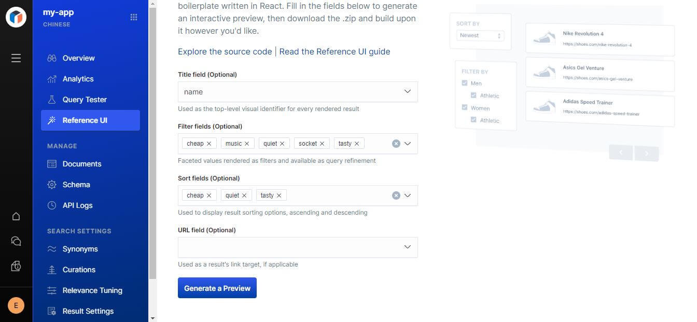
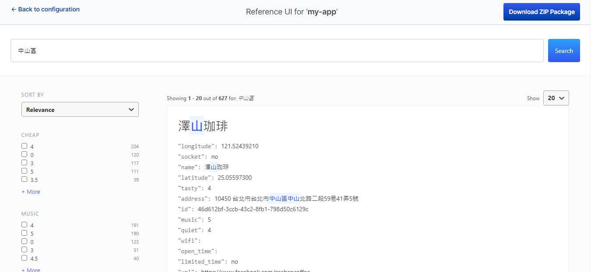
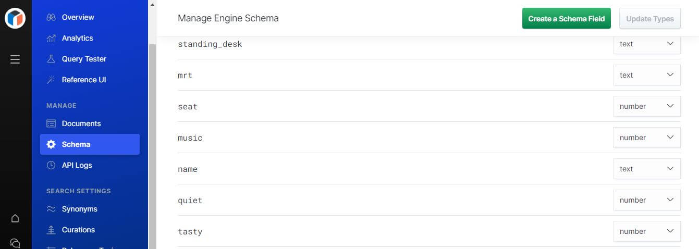
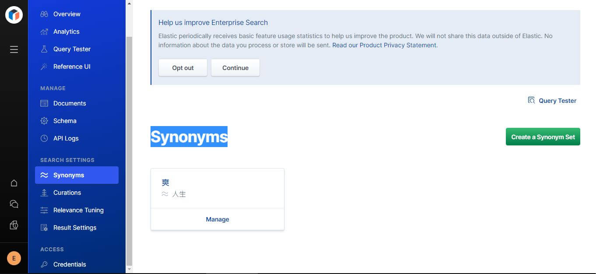
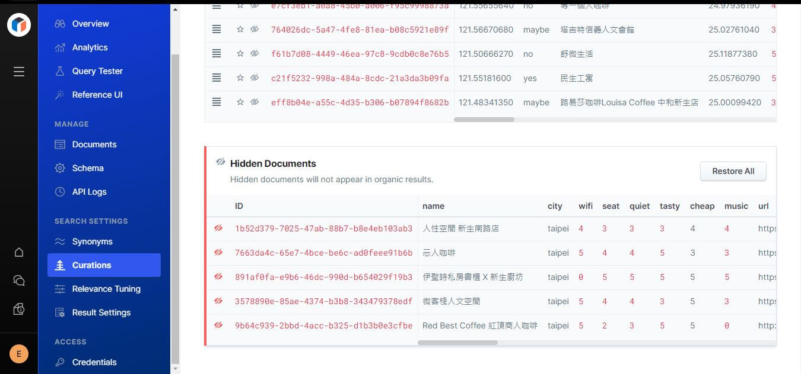
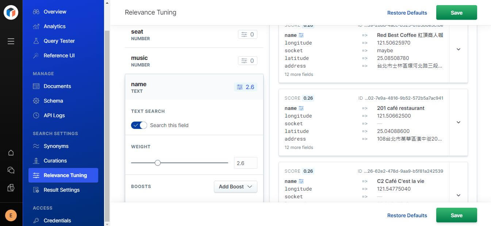

這篇文章會示範如何使用 Elastic App Search，App Search 是一個全文檢索的引擎，使用 Elastic Cloud 服務可以在幾分鐘內完成搜尋引擎的所有相關設定與資料匯入。
App Search 簡介
為什麼需要全文檢索引擎
- 什麼資料如果都直接對 DB 操作，資料量到某個程度時絕對不堪負荷
- 比起結構化的資料庫能提供更好的大海撈針能力
- 結果的同義詞搜尋與索引權重調整等功能
解決的痛點:
- 前後端原則上開箱即用，微調即可
- 大海撈針的效能棒
- 容易客製化搜尋結果，每筆搜尋結果都依分數排序，分數算法可以調整
- 加機台更容易
App Search
每個 App Search 都是一個獨立的引擎負責:
- 搜尋 Elasticsearch 中的資料
- 提供 API 整合調整資料來源到 Elasticsearch
- 提供 API 與程式或使用者介面互動
使用方式:
上傳資料，這次使用的是開源的咖啡廳資料
前後端都開箱即用，前端在設定好後還有 react 版本的範例程式提供下載
先進行欄位相關的設定: 要搜尋的標題、需要篩選和排序的欄位

UI 範例程式 Demo 與下載

App Search 優化
資料上傳後 App Search 也提供了好幾種的優化方式，可以調整的部分如下
- Schema (調整欄位的性質)
- Synpnyms (同義詞搜尋)
- Curation (字詞糾正)
- Relevance(欄位權重調整)
Schema (調整欄位的性質): 預設都是 text，需要把數字跟位置設成對應格式

Synpnyms (同義詞搜尋): 當搜尋的關鍵字沒有結果時，可以給那個關鍵字一個接近的字詞
譬如一夜乾找不到的話，一夜乾就可以搭配虱目魚同義詞，之後就可以得到虱目魚的相關結果
Curation (字詞糾正): 有些結果不想顯示、或是想要讓某些結果顯示在前面

Relevance(欄位權重調整): 標題跟敘述，會希望標題吻合的分數更高

索引觀念解析
以前高中讀的單字書，印象中只有分級沒有經過排序，但可能有單字間的相關性？是為了方便記憶及背誦？字典就比較不一樣，字典會有個按照發音或是筆劃所建立目錄或索引，而透過排序過的索引，能夠進一步增加我們查閱的速度。
生活上來說就像平常我的衣服是亂糟糟整坨放床上的，但透過這種概念，我會把它分成短袖長袖短褲長褲… 這樣每次要跑步找短褲會比較快，直接到短褲區找就好了，當然破萬筆的索引沒那麼簡單 xddd
反向索引
全文檢索引擎用的是反向索引，最簡單的做法是先把句子切分詞，"他" "原理" "像" "是" "這樣" "會" "切字" 然後透過分詞統計值運算後找那些分詞最有可能在的位置。底下的例子我們如果搜尋 bright butterfly 就是 {1,3} ∩ {1} 得到 1 所以我們可以得到 Document 1 的結果。
Solr、Lunr
最後重點，推薦!!! 除了雲端的 Elastic App Search 外，Solr 也很好用，實作上也相當的簡單，關鍵就是要餵原始資料然後告訴 Solr 要將哪些欄位建立索引，未來就可以直接透過索引來找資料了，厲害的 Solr 也有提供空間資料的檢索，透過定義經緯度 ( lat, lng )，就可以簡單的做出搜尋我附近的美食這種功能。
如果需要在前端使用全文檢索，Lunr 提供了一個輕量化的函式庫，當然分詞的部分是以英文為主，網路上就有人提供了一個中文的分詞，開源的時代真的是很需要大家互相協助，希望有一天自己也可以。
https://github.com/Wiredcraft/lunr-chinese
而我也在自己實作的咖啡地圖中就採用了這個檢索，原因我並沒有實作後端，後端是串接開源的資料，每次縣市回來就是 500 筆以上，使用這樣的檢索引擎可以更快速的幫我找到要找到的資料。
開源的資料：https://cafenomad.tw/developers/docs/v1.2
喜歡這篇文章，請幫忙拍拍手喔 🤣